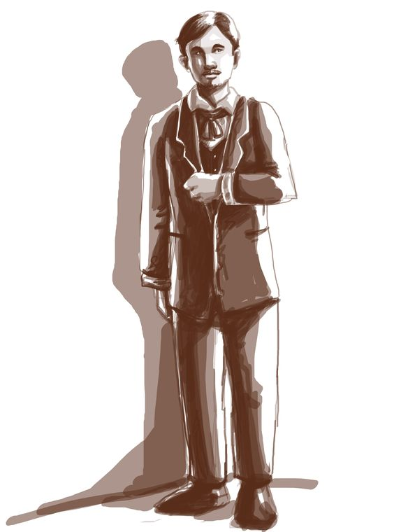
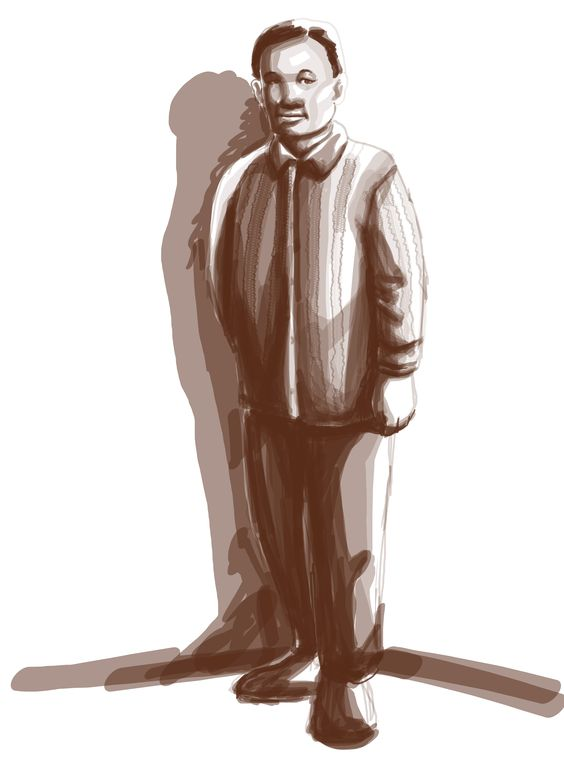
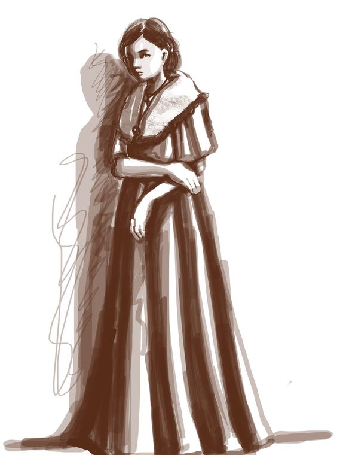
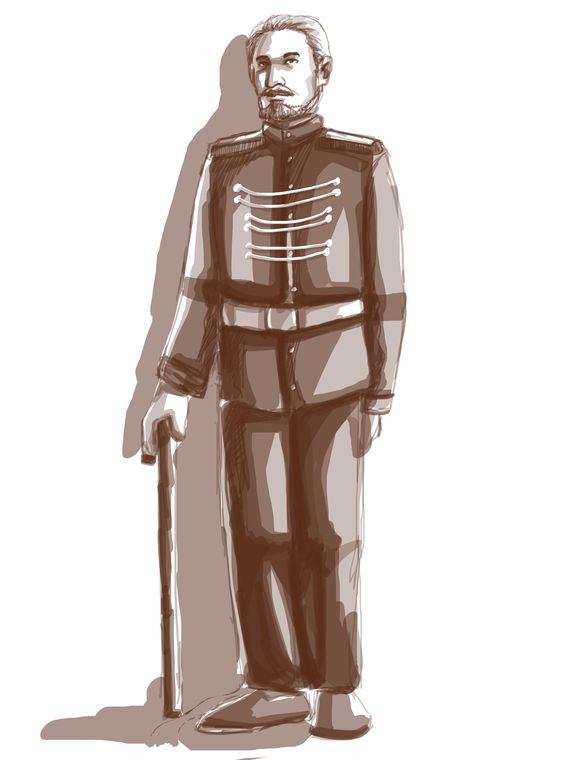
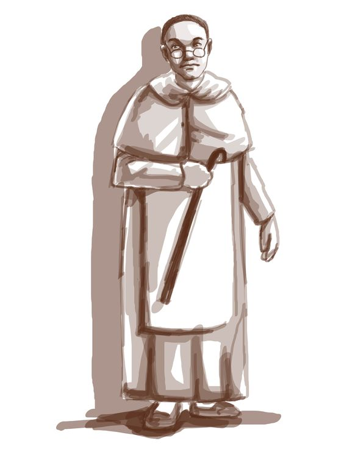

| Photo of Character | Name of Character | Information of Character | ||||||
|---|---|---|---|---|---|---|---|---|
|  | Crisostomo Ibarra | Juan Crisostomo Ibarra y Magsalin, also known as Ibarra, is a Filipino-Spanish descendent of Don Rafael Ibarra, a wealthy Spaniard. He was born and raised in the Philippines, but spent seven years studying in Europe during his adolescence. He was unaware of what was going on in his country throughout those years. When he returned to the Philippines, he discovered that his father had died, and that his body had been transported to a Chinese cemetery (allegedly) (but the body ended up in a river). He had heard stories about how helpful and nice his father was, and he was determined to respect his father's memory by following in his footsteps. | ||||||
|  | Kapitan Tiago | He is a rich native-born Pilipino who rubbed elbows with the powers that be during that time. He symbolizes the rich Pilipinos who oppress their fellow Pilipinos in exchange for the influence and the riches that they might gain from their powerful associations. | ||||||
|  | ||||||||
| Maria Clara | María Clara de Los Santos y Alba is the setting's most powerful yet weakest female character. When it comes to Noli, the name María Clara conjures up images of the ideal Filipino woman. The novel's central female character is María Clara. She is Capitán Tiago's and Doa Pa Alba's daughter. Doa Pa died while giving birth to María Clara. Tya Isabél, Capitán Tiago's cousin, guided and supervised the underprivileged child's development. Since childhood, Mara Clara has been Ibarra's beloved. Capitán Tiago sent María Clara to the Beaterio de Santa Clara while Ibarra was traveling in Europe, where she grew into a charming woman under the strict supervision of the Catholic sisters. | |||||||
|  | ||||||||
| Don Rafael Ibarra | Who is Don Rafael Ibarra in Noli Me Tangere? In the novel Noli Me Tangere, Don Rafael Ibarra is a prominent figure in society. He is a wealthy man and is very well respected. Many people look up to him and admire him. However, he also has his share of enemies. Some people dislike him because of his wealth and status, while others simply do not like him as a person. Despite this, Don Rafael Ibarra remains a strong and determined character throughout the novel. | |||||||
|  | ||||||||
| Padre Damaso | Dámaso Verdolagas (also known as Padre Dámaso, Padre Damaso, or Father Damaso) was a Franciscan priest who served as the curate of San Diego's parish church. He served as curate for nearly two decades before being succeeded by Padre Salvi, who was significantly younger. Padre Damaso was well-known among the Ibarras, so Crisóstomo was taken aback by what the former curate had done to Don Rafaél. | |||||||
References:
Slideshare.com (2015, November 8) | Kapitan tiago
Retrieved from: https://www.slideshare.net/ellenjoyraballe/kapitan-tiago#:~:text=He%20is%20a%20rich%20native,gain%20from%20their%20powerful%20associations.
P. Nandhini (2022, March 15) | Noli Me Tangere Characters, Who Are The Characters In Noli Me Tangere?
Retrieved from: https://latestnews.fresherslive.com/articles/noli-me-tangere-characters-366945
H. Arlie (n.d) | Who is Don Rafael Ibarra in Noli Me Tangere?
Retrieved from: https://neeness.com/who-is-don-rafael-ibarra-in-noli-me-tangere/
Pictures: https://www.pinterest.ph/jomarnacorda/noli-characters/